Scope, test results and remaining work · Asset manifest · Generation provenance · Performance observations
These screenshots are from the actual development runtime. Landscape captures use browser emulation. Existing terrain and foreground objects remain; their visual consistency still needs work.
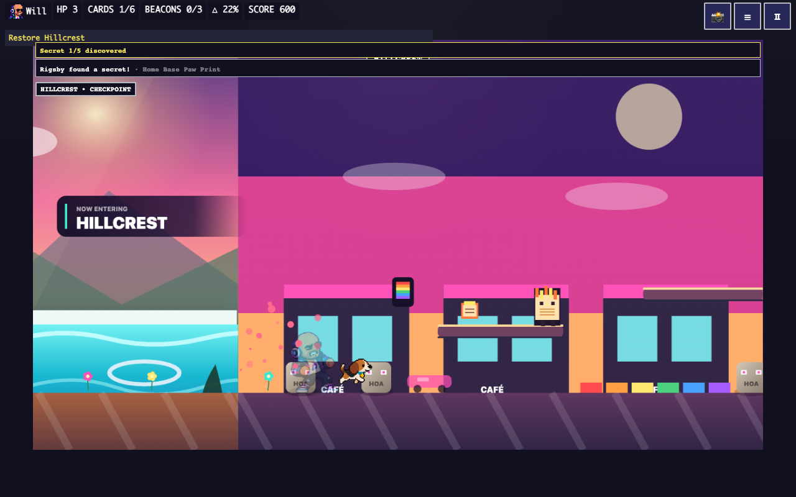
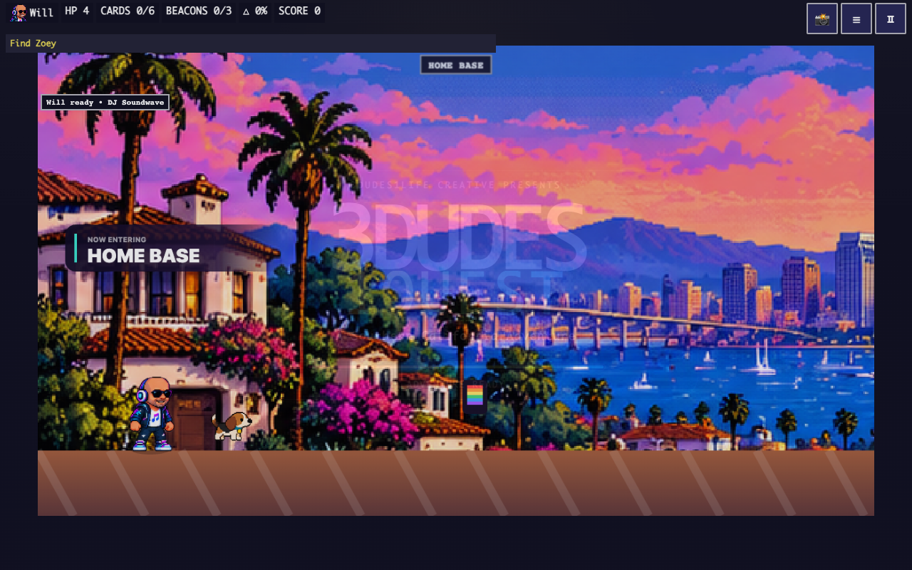
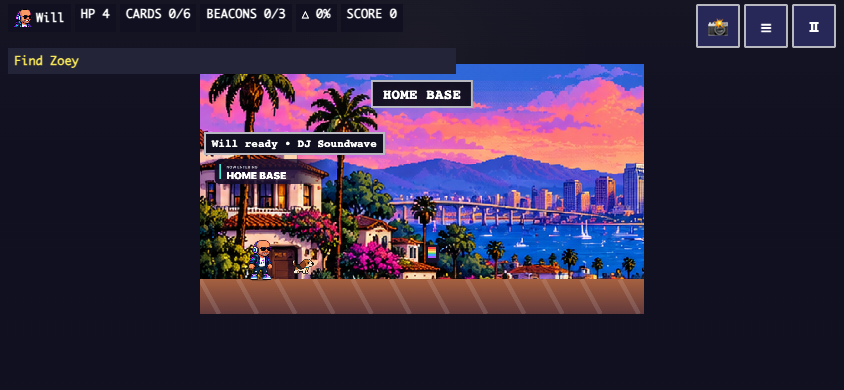
Court from the existing natural keyboard route; current phase counts remain 1/3/5.
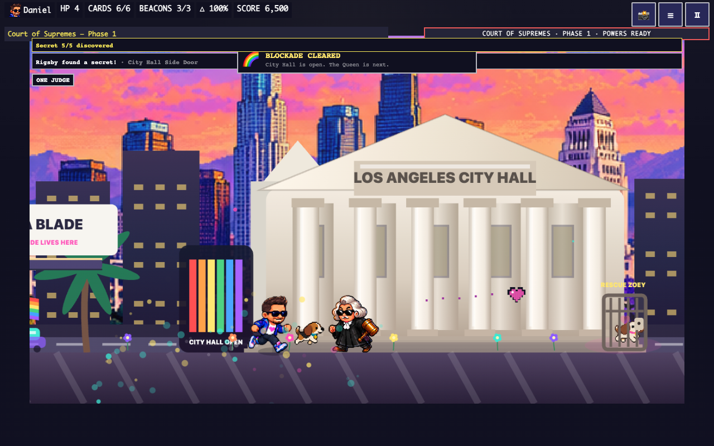
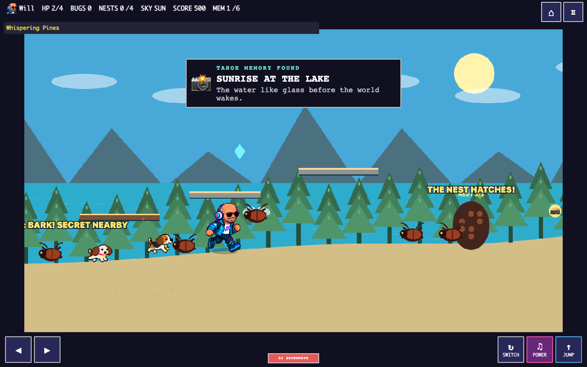
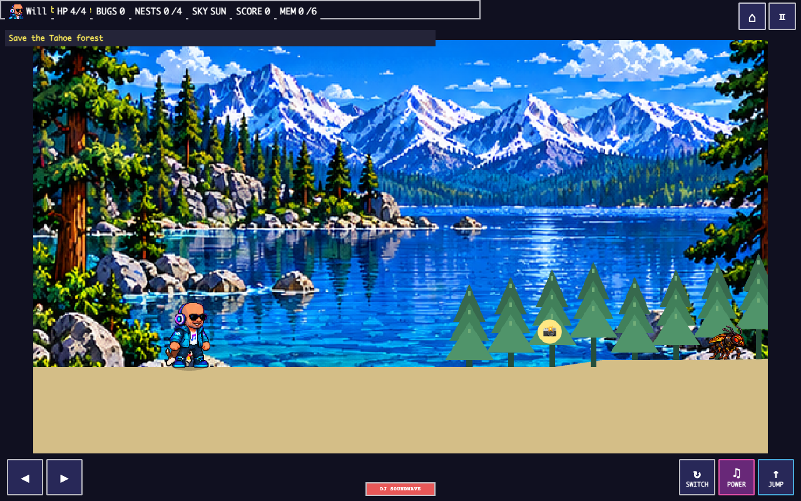
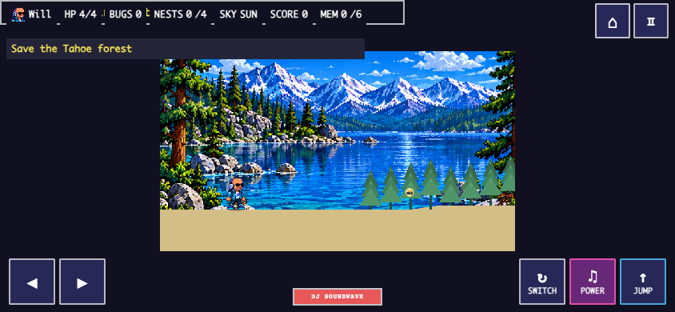
Existing Pine Beetle Queen, natural keyboard route.
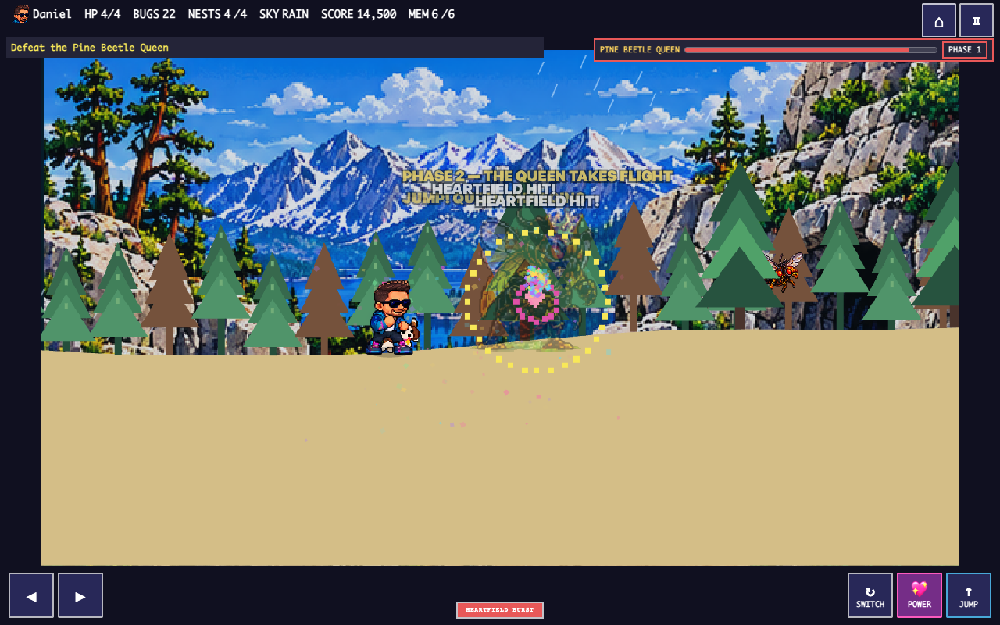
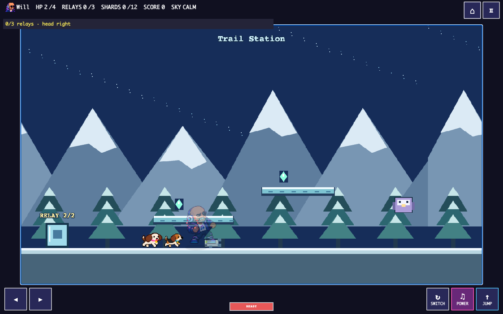
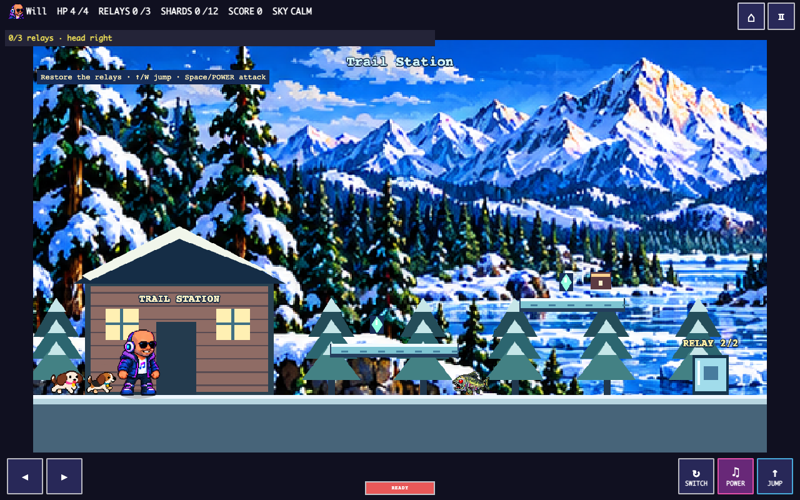
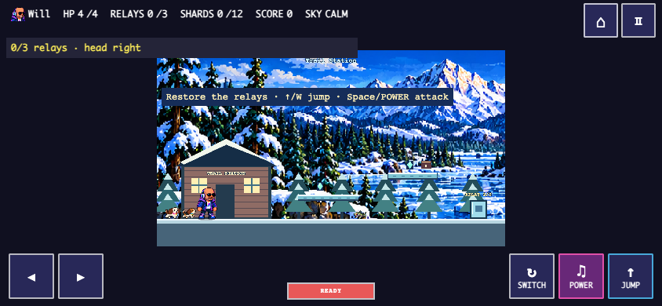
Existing Frost Queen, natural keyboard route.
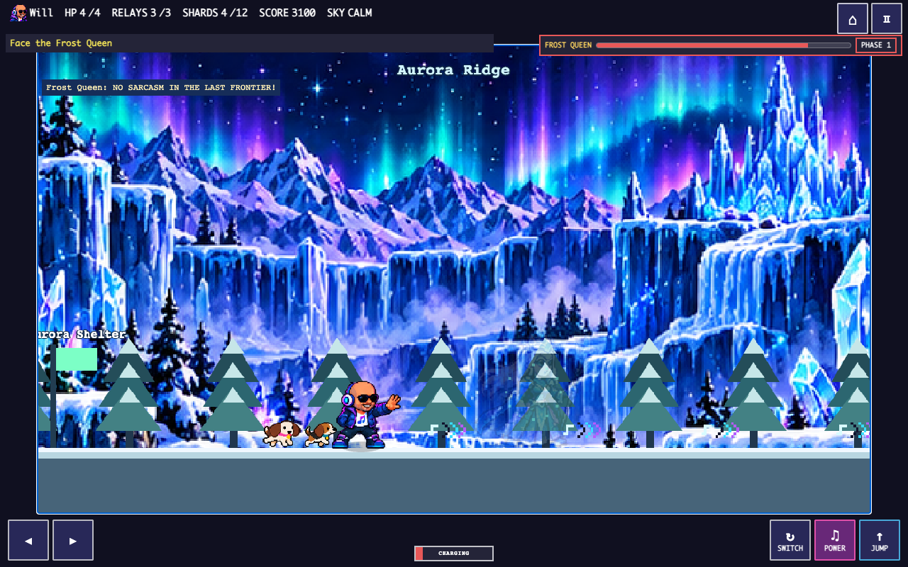
12 active actors and seven review-only candidates. Idle/walk only. Open full contact sheet.
Toxic lake and pipeline disaster panels remain review-only; they do not imply implemented encounters.
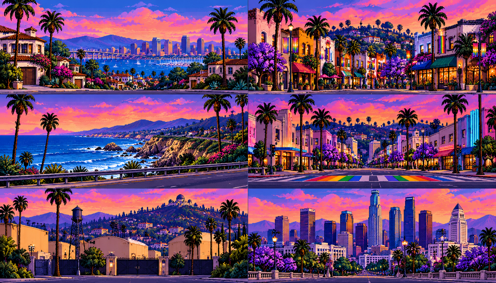
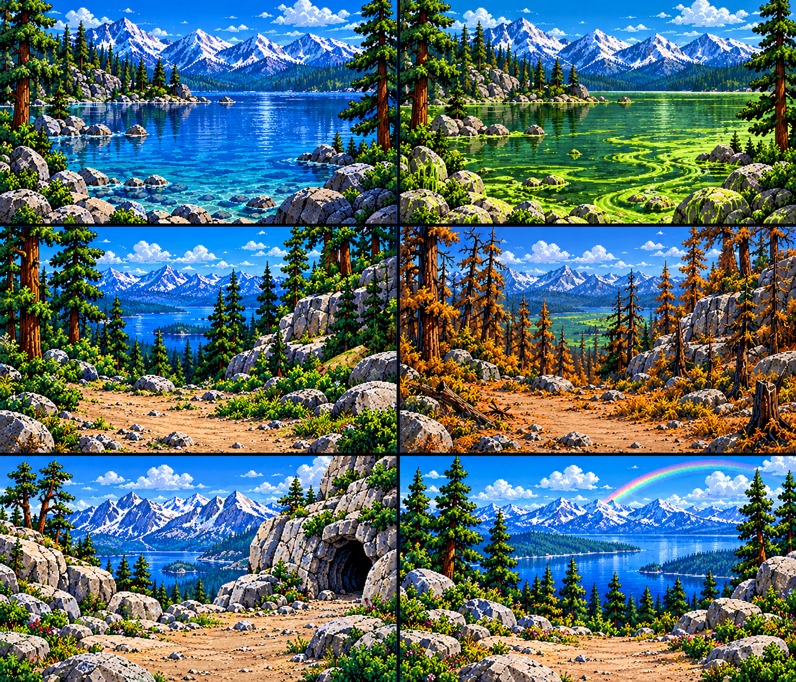
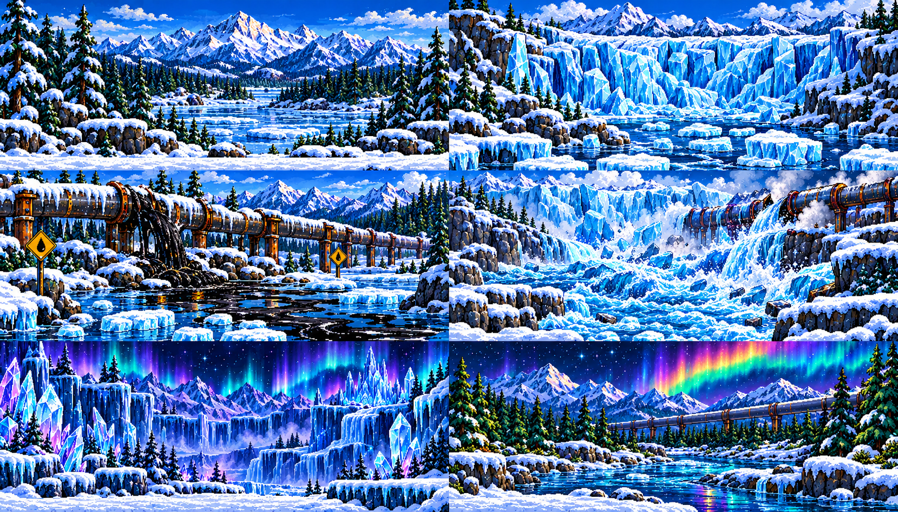